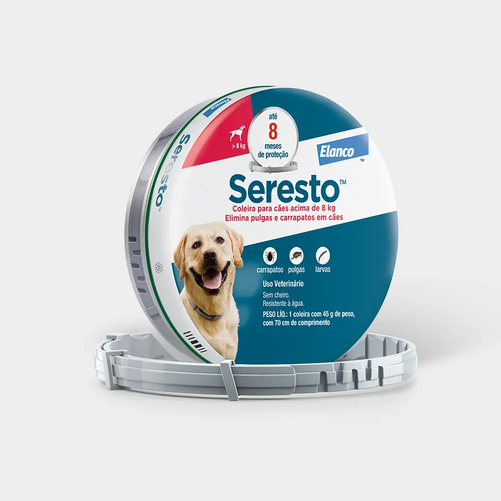
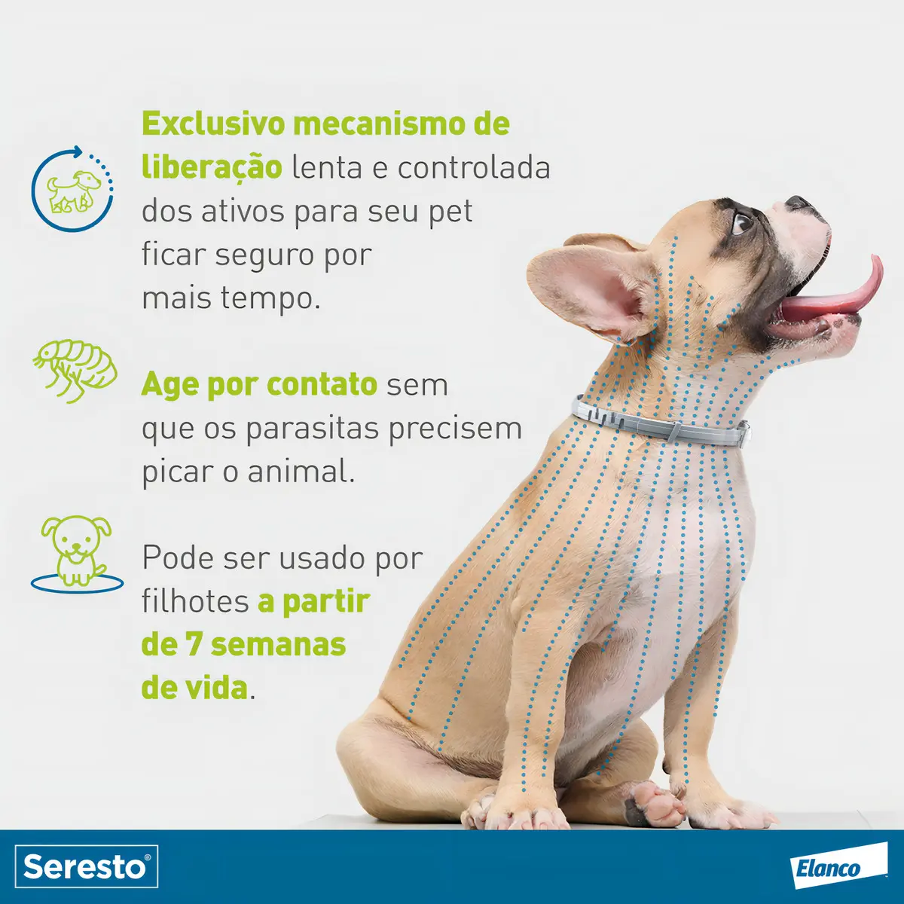
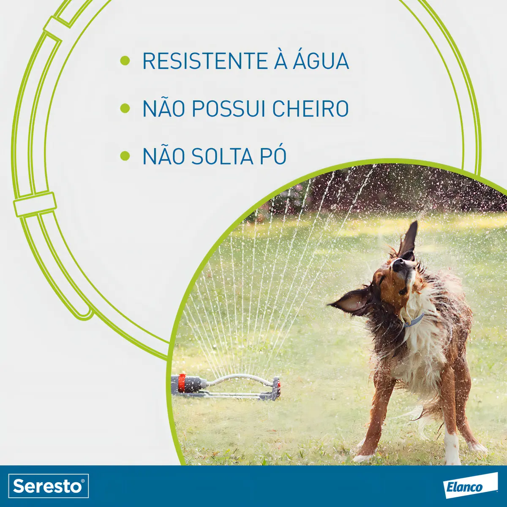
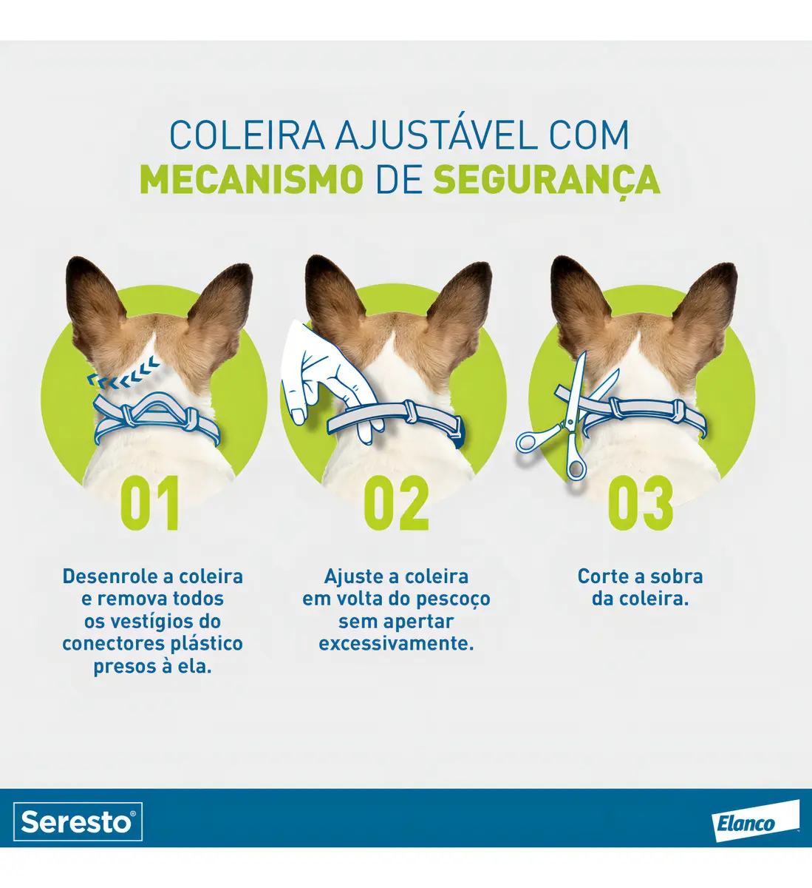
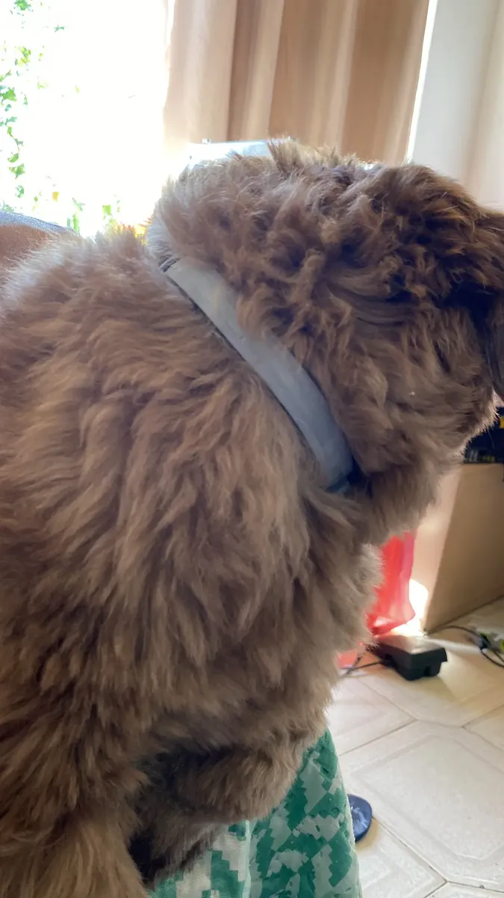
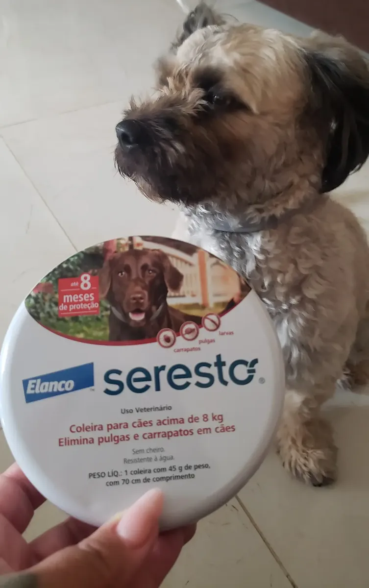
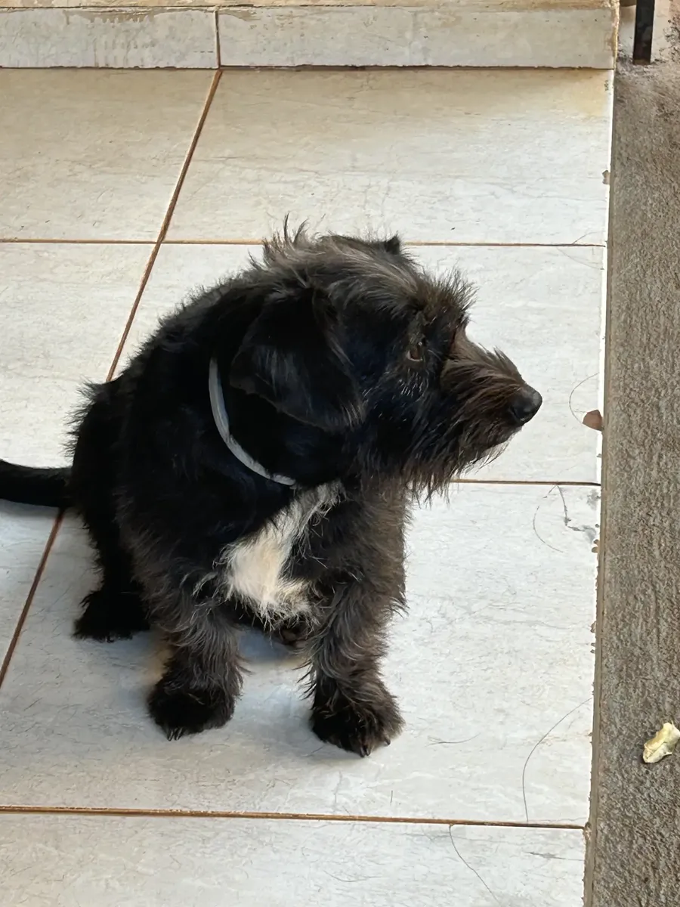
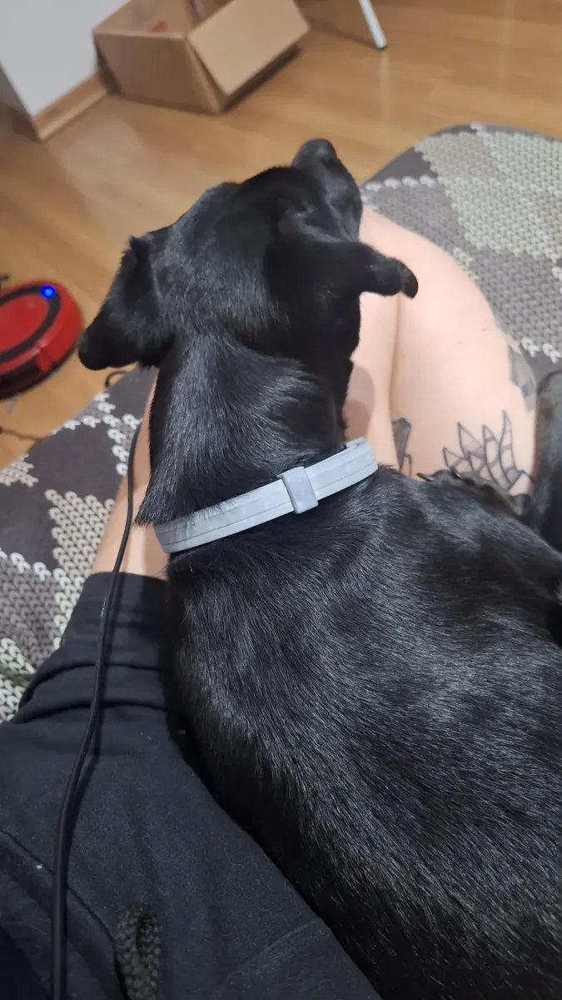

Sim, a coleira Seresto (Elanco) para cães acima de 8kg vale a pena para a maioria dos tutores: ela combina 8 meses de proteção contínua contra pulgas e carrapatos, nota 4,8 de 5 em 5.501 avaliações no Mercado Livre e mais de 100 mil unidades vendidas (Mercado Livre — Coleira Seresto Acima de 8kg Elanco, retrieved 2026-09-14). O ponto de atenção não é eficácia, é estética: uma parte dos comentários reclama do visual simples da coleira, sem afetar a função.
Key Takeaways
- Nota 4,8/5 em 5.501 avaliações no Mercado Livre, com 1.978 comentários e mais de 100 mil vendas.
- Protege contra pulgas, carrapatos e larvas por até 8 meses por unidade, segundo o fabricante (Elanco).
- Sem cheiro, não solta pó e é resistente à água (pode molhar em banho ou chuva).
- Indicada para cães acima de 8kg; a Elanco vende uma versão específica para cães menores e gatos.
- Principal crítica nas avaliações reais: aparência considerada simples/pouco atrativa, sem relatos de perda de eficácia por causa disso.
A Seresto é uma coleira antiparasitária de uso veterinário, fabricada pela Elanco, que age por contato: os ativos são liberados de forma lenta e controlada ao longo de até 8 meses, eliminando pulgas, carrapatos e larvas sem que o parasita precise picar o cão primeiro. Segundo material do fabricante, a linha pode ser usada por filhotes a partir de 7 semanas de vida, mas essa observação vale para a linha Seresto em geral — a versão analisada aqui é especificamente indicada para cães acima de 8kg, então confirme o peso do seu cão contra a faixa da embalagem antes de comprar.

| Característica | Detalhe |
|---|---|
| Laboratório | Elanco |
| Marca | Seresto |
| Animal recomendado | Cães acima de 8kg |
| Comprimento da coleira | 70 cm |
| Peso da unidade | 150 g (coleira com 45 g de peso líquido de produto) |
| Duração da proteção | Até 8 meses por unidade |
| Resistência à água | Sim |
| Cheiro | Não possui |
| Preço no Mercado Livre | R$ 113 (à vista) ou 4x R$ 28,25 sem juros |
(Mercado Livre — ficha técnica do produto, retrieved 2026-09-14; preço sujeito a alteração pelo vendedor.)
A coleira é indicada para uso contínuo mesmo em contato com água — banho, chuva ou piscina não anulam o efeito, segundo a Elanco. Isso é relevante porque um dos pontos mais citados em produtos antiparasitários concorrentes é perder eficácia depois de molhar; nos comentários reais do produto, não há relatos de reclamação nesse sentido.

A coleira é ajustável ao pescoço do animal e vem com um mecanismo de corte da sobra, seguindo três passos: desenrolar e remover os vestígios dos conectores plásticos, ajustar em volta do pescoço sem apertar excessivamente, e cortar a sobra. É um processo simples, mas que exige atenção — apertar demais no ajuste é um erro comum apontado em fóruns de tutores, não específico deste produto.

Com 5.501 avaliações e nota 4,8 de 5, o resumo de opiniões gerado a partir dos comentários no Mercado Livre aponta o produto como "altamente eficaz na proteção contra pulgas e carrapatos, com uma durabilidade de até 8 meses", "bem tolerada pelos cães, sem causar alergias ou desconforto" e com bom custo-benefício (avaliações do produto no Mercado Livre, retrieved 2026-09-14). Alguns comentários individuais, reproduzidos abaixo, dão o tom real do que os compradores relatam:
"Excelente coleira seresto! Comprei para o meu cachorro acima de 8kg. Nada resolvia contra as pulgas..."
★★★★★comprador verificado, Mercado Livre · 65 pessoas acharam útil"Meu cachorro usa há anos e se adaptou super bem. Em algumas épocas, durou até mais de 12 meses. Hoje em dia, como ele passeia bastante, trocamos de 6 em 6 meses..."
★★★★★comprador verificado, Mercado Livre · 34 pessoas acharam útil"Essa coleira em termos de estética é depressiva, parece um tipo de bracelete de manicômio, cinza sem nenhum design sequer, porém se você é uma pessoa mais preocupada com a função..."
★★★★☆comprador verificado, Mercado Livre · 71 pessoas acharam útilVale notar que a crítica mais votada entre os comentários negativos é sobre estética, não sobre eficácia — um padrão que se repete: quem reclama, reclama do visual; quem elogia, elogia o resultado contra pulgas e carrapatos.
Além do texto, compradores também enviam fotos junto das avaliações no Mercado Livre. As imagens abaixo são reais, enviadas por tutores diferentes — não é possível confirmar qual foto pertence a qual comentário específico citado acima, por isso aparecem aqui como galeria separada.




Fotos enviadas por compradores reais na seção de avaliações do Mercado Livre, reproduzidas aqui como ilustração das avaliações citadas nesta página (fonte, retrieved 2026-09-14).
| Prós | Contras |
|---|---|
| Proteção de até 8 meses por unidade | Visual simples, criticado por parte dos compradores |
| Sem cheiro e sem soltar pó | Durabilidade real pode cair para 6 meses com banhos frequentes |
| Resistente à água (banho e chuva) | Preço mais alto que coleiras antiparasitárias comuns não veterinárias |
| Nota 4,8/5 em mais de 5 mil avaliações | Exige ajuste correto para não ficar frouxa ou apertada |
| Mecanismo de segurança com corte da sobra | Restrita a cães acima de 8kg (há outra versão para porte menor) |
Para tutores de cães acima de 8kg que já tentaram produtos antiparasitários mais simples sem resultado, a Seresto tende a valer o investimento: o volume de avaliações (5.501) e a nota (4,8) indicam consistência de resultado em escala, não só marketing do fabricante. A única ressalva real, segundo os próprios compradores, é estética — não afeta a proteção, mas pode incomodar quem se importa com a aparência do acessório no cão.
Antes de aplicar, vale conversar com o veterinário do seu cão, principalmente se ele tiver histórico de sensibilidade de pele, for filhote, estiver grávida/lactante, ou já usar outro produto antiparasitário — o uso combinado de mais de um produto pode não ser recomendado pelo fabricante.
Se o seu cão sai bastante de casa (passeios longos, quintal, área externa), a coleira antiparasitária costuma andar junto com outro tipo de proteção: localização em tempo real. Veja o guia completo de coleira GPS para pet ou, se o problema for fuga recorrente, o que considerar em uma coleira GPS para cachorro que foge muito.
Segundo o fabricante (Elanco), a coleira age por contato, liberando os ativos de forma lenta e controlada para eliminar pulgas, carrapatos e larvas por até 8 meses, sem que o parasita precise picar o animal. Nas 5.501 avaliações do produto no Mercado Livre, a nota média é 4,8 de 5, com o resumo de opiniões apontando eficácia e boa tolerância pelos cães como pontos mais citados.
Não. É uma das características técnicas informadas pelo fabricante: a coleira não possui cheiro e não solta pó, além de ser resistente à água (pode molhar em banho ou chuva sem perder o efeito, segundo a Elanco).
O fabricante indica até 8 meses de proteção contínua por unidade. Em avaliações de compradores, alguns relatam durabilidade de 6 a 12 meses dependendo da rotina do cão — frequência de banho e exposição à água tende a reduzir esse tempo.
Este conteúdo é informativo e não substitui orientação veterinária. Consulte um médico-veterinário antes de aplicar qualquer produto antiparasitário no seu animal, especialmente em filhotes, fêmeas gestantes/lactantes ou pets com histórico de sensibilidade de pele. Escrito pela Equipe Smart Pet Gadgets, redação especializada em comparativos de produtos pet no mercado brasileiro. Veja nossa política editorial e como verificamos as fontes citadas neste artigo.
🐾 Confira o preço e a disponibilidade atual no Mercado Livre.
Ver no Mercado Livre →Link de afiliado: podemos receber uma comissão por compras feitas através deste link, sem custo adicional para você.
Nildo Alves — curadoria de produtos pet no Smart Pet Gadgets. Testa e pesquisa produtos para cães e gatos, cruzando especificações de fabricante com boas práticas veterinárias e dados de mercado.
Sobre o Smart Pet Gadgets · Contato · Política editorial e de afiliados